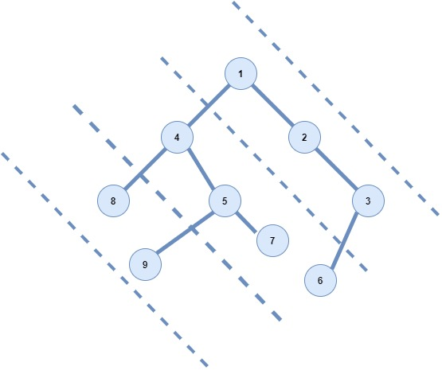

Problem Description
Consider lines of slope -1 passing between nodes.
Given a Binary Tree A containing N nodes, return all diagonal elements in a binary tree belonging to same line.
NOTE:
0 <= N <= 105
First and only Argument represents the root of binary tree A.
Return a 1D array denoting the diagonal traversal of the tree.
Input 1:
1
/ \
4 2
/ \ \
8 5 3
/ \ /
9 7 6
Input 2:
11
/ \
20 12
/ \ \
1 15 13
/ \ /
2 17 16
\ /
22 34
Output 1:
[1, 2, 3, 4, 5, 7, 6, 8, 9]
Output 2:
[11, 12, 13, 20, 15, 17, 16, 1, 2, 22, 34]
Explanation 1:
 1) Diagonal 1 contains [1, 2, 3] 2) Diagonal 2 contains [4, 5, 7, 6] 3) Diagonal 3 contains [8, 9]NOTE: The order in the output matters like for Example: 6 and 7 belong to same diagonal i.e diagonal 2 but as 7 comes before 6 in pre-order traversal so 7 will be added to answer array first.
So concantenate all the array as return it as a single one. Final output: [1, 2, 3, 4, 5, 7, 6, 8, 9]
Explanation 2:
1) Diagonal 1 contains [11, 12, 13] 2) Diagonal 2 contains [20, 15, 17, 16] 3) Diagonal 2 contains [1, 2, 22, 34]So concantenate all the array as return it as a single one. Final output: [11, 12, 13, 20, 15, 17, 16, 1, 2, 22, 34]